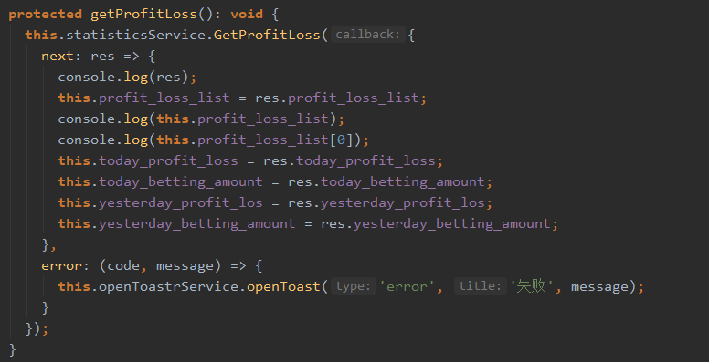
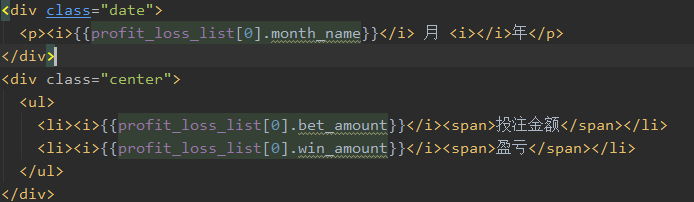
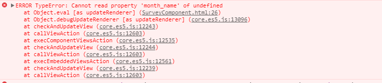
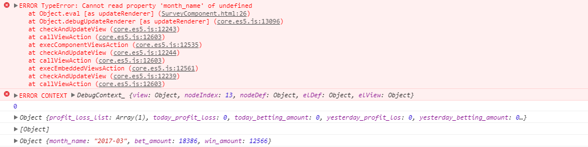
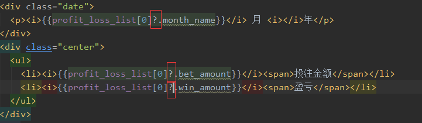

Angular4怎么确保渲染模板时已经取到异步数据呢? 11月 22, 2017 发布在 Angular 代码:// 请求数据  // 绑定数据  // 报错  在进行数据绑定的时候会出现这个错误。但是数据还是会显示在页面上。console.log()数据的时候，数据也是有的。后来发现报这个错是在console.log()前面。  所以应该是当我们异步请求数据的时候，数据还没请求到就去渲染数据了，所以他会报错。 解决方法： 加上？表示这个是可选的，就是可以没有，所以就不会报错了。